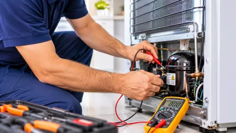
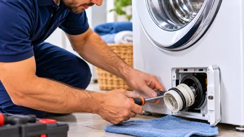
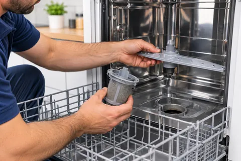
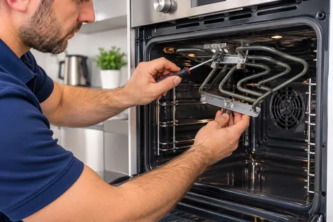
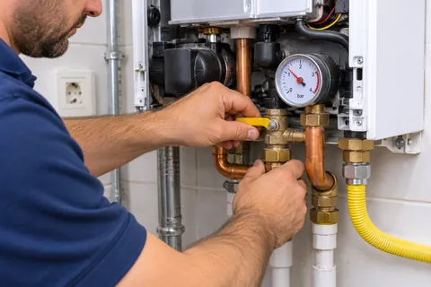
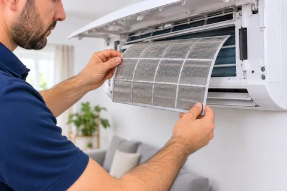

Buzdolabı Servisi
Soğutma kaybı, karlanma, su sızıntısı, fan ve termostat sorunları.
Servis talebi gönder →Buzdolabı, çamaşır makinesi, bulaşık makinesi, fırın, kombi ve klima arızalarında teknisyenimiz adresinize gelir, arızayı tespit eder ve ücreti işlemden önce söyler.
Servis hattı0 (5XX) XXX XX XXEvinizdeki beyaz eşya, kombi ve klimanın arıza, bakım ve onarımı için tek numara.

Soğutma kaybı, karlanma, su sızıntısı, fan ve termostat sorunları.
Servis talebi gönder →
Su boşaltmama, sıkmama, kapak kilidi, aşırı titreşim ve hata uyarıları.
Servis talebi gönder →
Temiz yıkamama, su almama, kurutmama ve pompa arızaları.
Servis talebi gönder →
Isınmama, rezistans, termostat, fan ve ocak gözü arızaları.
Servis talebi gönder →

Sık görülen belirtiler ve güvenle yapabileceğiniz ilk kontroller.
Kapağın tam kapandığından ve arkada hava boşluğu olduğundan emin olun. Düzelmezse fişi çekmeden önce bizi arayın; içerideki yiyecekleri korumak için kapağı az açın.
Programı durdurun, kapağı zorlamayın. Pompa filtresi tıkanmış olabilir; emin değilseniz müdahale etmeden servis isteyin.
Alt filtreyi ve pervane deliklerini kontrol edin. Sorun sürüyorsa su alma veya ısıtma kaynaklı olabilir.
Basıncı kılavuzdaki değere getirin. Sık tekrar ediyorsa tesisatta ya da kombide kaçak olabilir; teknik kontrol gerekir.
Cihazı kapatın ve prizden çekin. Tahliye hattı tıkanmış veya filtre kirlenmiş olabilir.
Sigortayı ve ayarı kontrol edin. Rezistans ya da termostat arızasında elektrikli parçalara dokunmayın.
Güvenlik: Gaz kokusu alırsanız cihazı ve elektrik düğmelerini kullanmayın, ortamı havalandırın ve doğal gaz acil hattı 187'yi arayın. Elektrikli parçalara cihaz prize takılıyken dokunmayın.
Arızayı ve ücreti öğrenmeden hiçbir işlem yapılmaz.
Cihazın türünü, modelini ve gördüğünüz arızayı kısaca anlatın.
Size uygun gün ve saat birlikte belirlenir.
Teknisyen cihazı inceler, arızayı ve yapılacak işlemi açıklar.
Ücret işlemden önce söylenir. Onay vermezseniz işlem yapılmaz.
Onarım sonrası cihaz sizin yanınızda çalıştırılarak teslim edilir.
Randevu için arayın ya da WhatsApp'tan cihazınızı ve arızayı yazın.
Bağımsız bir özel servisiz. Hiçbir markayı temsil etmiyoruz, ücreti ve işlemi önceden söylüyoruz.
Hiçbir üretici markanın yetkili servisi, bayisi veya çağrı merkezi değiliz. Marka garantisi kapsamındaki cihazlar için önce üreticinin yetkili servisine başvurmanızı öneririz.
Arıza tespitinden sonra ücreti açıkça bildiririz. Onayınız olmadan parça değişimi veya onarım yapılmaz.
Değişecek parçanın ne olduğunu ve neden değiştiğini anlatırız; çıkan parçayı isterseniz size bırakırız.
Yapılan işlem ve ödenen ücret için isteğinize göre yazılı servis formu veya belge düzenlenir.
Buzdolabı, çamaşır makinesi, bulaşık makinesi, fırın ve ocak gibi beyaz eşyalar ile kombi ve klimalara arıza, bakım ve onarım hizmeti veriyoruz.
Arıza tespitinden sonra, işleme başlamadan önce. Ücret cihaza, arızaya ve gerekiyorsa değişecek parçaya göre belirlenir. Onay vermezseniz işlem yapılmaz.
Evet, randevu ile adreste servis veriyoruz. Arayarak ya da WhatsApp'tan adresinizi ve arızayı iletebilirsiniz.
Kombi için ısıtma sezonu başlamadan, klima için yoğun kullanım dönemi öncesinde yılda bir bakım genel olarak önerilir.
Paylaştığınız ad, telefon ve adres yalnızca servis talebiniz için kullanılır. Ayrıntılar Gizlilik ve KVKK sayfamızdadır.
Arayın ya da formu doldurun; mesajınız WhatsApp'ta hazır açılır, siz yalnızca gönderirsiniz.